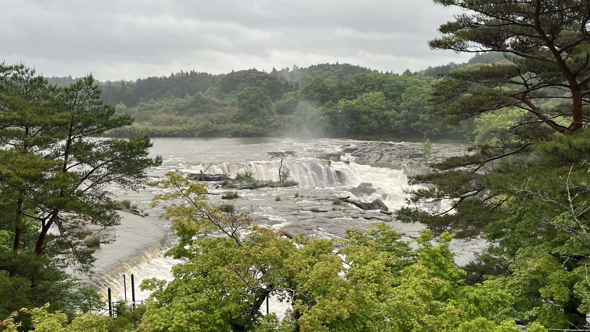

Japan Picture





Loading...Please wait.
大学時代から旅をするようになり、各地の風景、歴史、文化、食の多様性に触れる中で、新たな発見と感動を得てきました。 このWebサイトでは、旅の記録を綴っています。写真を通して旅の空気や温度、匂いまで感じられるよう心がけています。ここでの記録が、新たな旅へのヒントや、まだ見ぬ世界への架け橋となれば幸いです。
I have been traveling since I was in university, and have made new discoveries and impressions as I have come into contact with the diversity of landscapes, history, culture, and cuisine of various regions. This website is a record of my travels. I try to let you feel the air, temperature, and even the smell of the trip through the photos. We hope that our records here will provide you with hints for new travel and a bridge to a world you have not yet seen.